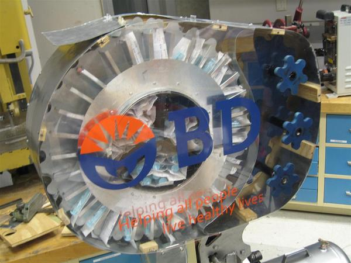
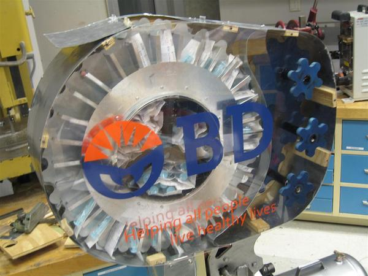
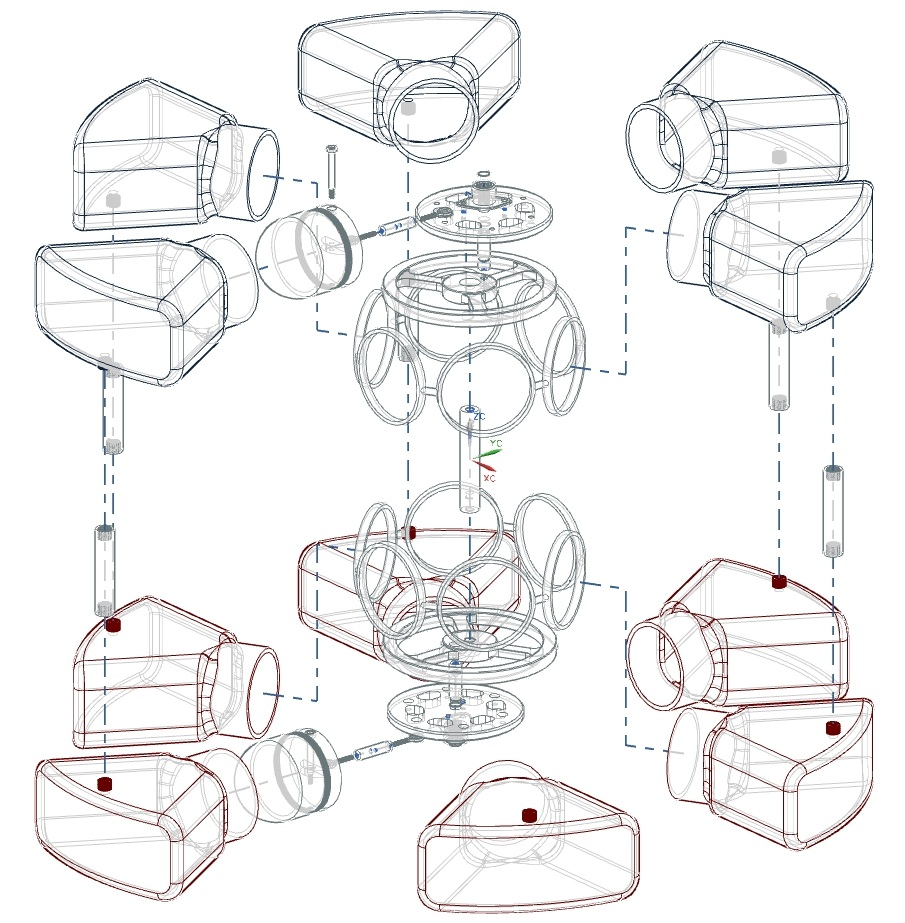
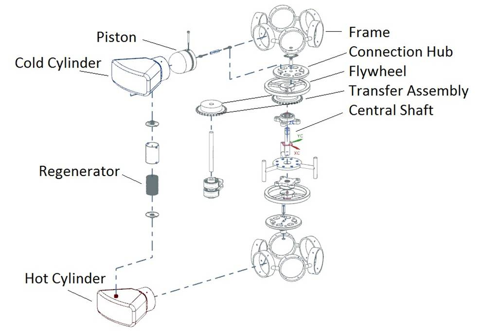

Team lead and project manager for prototyping a manual syringe dispenser as a research initiative for Becton, Dickinson and Co.(BD).
We developed the parts in NX and SolidWorks, and performed FEA and Fluid FloXpress analysis on the inner volume to determine ideal inlet/outlet opening positions and angles. Finally we built a physical prototype using aluminium sheets, plywood and plastic cut using a Waterjet CNC machine.


Designed output capable of 14.7kW to 20.6kW. More effective than a 2-cylinder, at lower pressures and with fewer moving parts due to lack of cam shafts and valve assembly. FEA analysis shows structural and thermal feasibility.
 